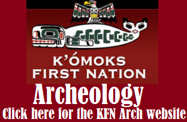

An online database for K'omoks First Nation artifacts, as well as a hub of educational resources on the indigenous people and history of the K'omoks Valley.



The K'omoks Valley, also known as the "Land of Plenty", is rich in history dating back to the jurassic period. Fossils of prehistoric plants and animals are found in many riverbeds and eroding shale cliffsides in the area.
This land has also been occupied "Since time imemorial" by the First People belonging to some of the local First Nations. These indigenous groups looked much different in the past than they do today, including changes to where they lived.

K'omoks Reserves
Did you know? The Indian Act was first implimented by the Government of Canada in 1867, assigning legislative dominion over "Indians, and Lands reserved for the Indians." This act paved the way for removal of indigenous people from the land, containing them to much smaller fragments of their traditional territory.
The K'omoks First Nation, known by the Canadian Government as the "Comox Indian Band", has 4 "indian reserves", known as IR1, IR2, IR3, and IR4.
- Puntledge River
- Current Village and residential area
- Goose Spit
- Salmon River Estuary, Sayward
Pentlatch Pebbles
- Round, flat, smooth, palm sized stone
- Incised designs, meaning they were carved or chizeled into the stone
- Designs are typically a series of lines